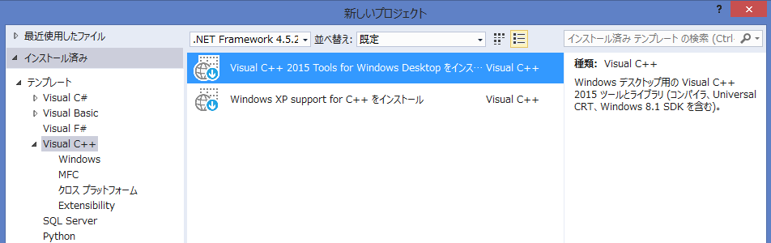
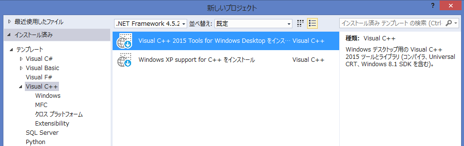

概要
ここでは、ScenarioModをさわる前段階として、Visual Studioのインストール時の留意点が記載されています。
前準備
Visual C++ をインストールしていない人は、この段階で、Visual C++ をインストールすること。
-
Visual Studio 2015

-
Visual Studio 2017


ここでは、ScenarioModをさわる前段階として、Visual Studioのインストール時の留意点が記載されています。
Visual C++ をインストールしていない人は、この段階で、Visual C++ をインストールすること。
